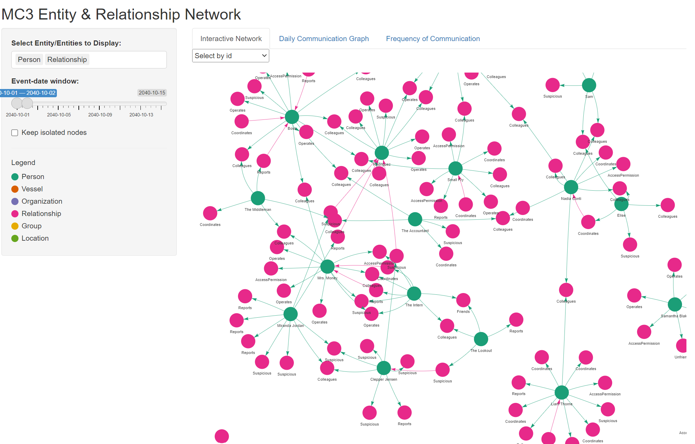
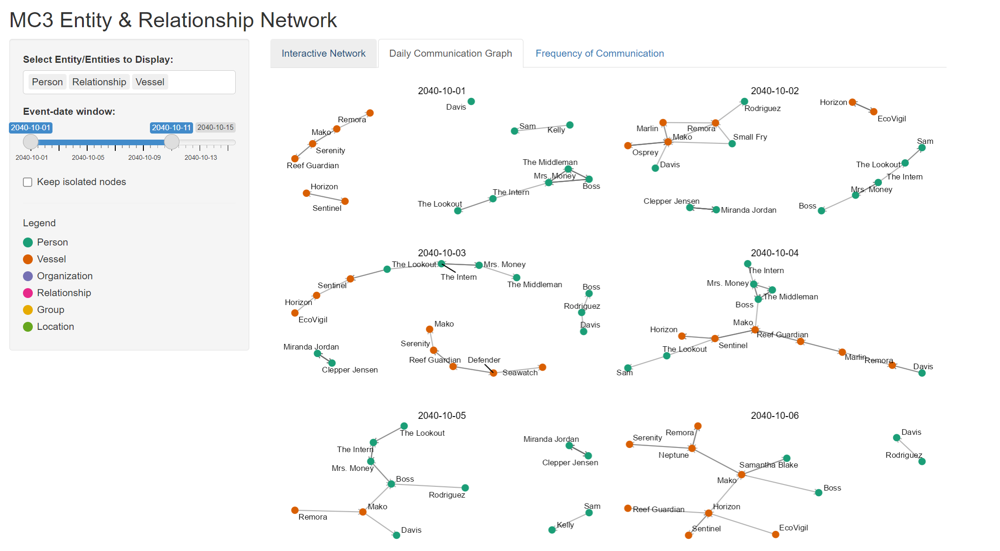
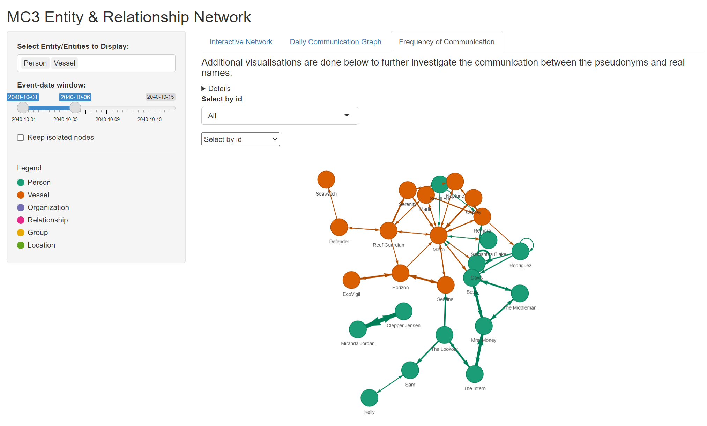

Take-Home_Ex03 - Storyboard
Introduction
This storyboard will contain the tasks and questions from VAST Challenge and Mini Challenge 3. The visualisations will help to answer question 2 and 3 from MC3.
Over the past decade, the community of Oceanus has faced numerous transformations and challenges evolving from its fishing-centric origins. Following major crackdowns on illegal fishing activities, suspects have shifted investments into more regulated sectors such as the ocean tourism industry, resulting in growing tensions. This increased tourism has recently attracted the likes of international pop star Sailor Shift, who announced plans to film a music video on the island.
Clepper Jessen, a former analyst at FishEye and now a seasoned journalist for the Hacklee Herald, has been keenly observing these rising tensions. Recently, he turned his attention towards the temporary closure of Nemo Reef. By listening to radio communications and utilizing his investigative tools, Clepper uncovered a complex web of expedited approvals and secretive logistics. These efforts revealed a story involving high-level Oceanus officials, Sailor Shift’s team, local influential families, and local conservationist group The Green Guardians, pointing towards a story of corruption and manipulation
Motivation
To shape visualisations that is able to help Clepper uncover insights to questions 2 and 3.
Clepper diligently recorded all intercepted radio communications over the last two weeks. With the help of his intern, they have analyzed their content to identify important events and relationships between key players. The result is a knowledge graph describing the last two weeks on Oceanus. Clepper and his intern have spent a large amount of time generating this knowledge graph, and they would now like some assistance using it to answer the following questions.
Clepper found that messages frequently came in at around the same time each day.
Develop a graph-based visual analytics approach to identify any daily temporal patterns in communications.
How do these patterns shift over the two weeks of observations?
Focus on a specific entity and use this information to determine who has influence over them.
Clepper has noticed that people often communicate with (or about) the same people or vessels, and that grouping them together may help with the investigation.
Use visual analytics to help Clepper understand and explore the interactions and relationships between vessels and people in the knowledge graph.
Are there groups that are more closely associated? If so, what are the topic areas that are predominant for each group?
- For example, these groupings could be related to: Environmentalism (known associates of Green Guardians), Sailor Shift, and fishing/leisure vessels.
It was noted by Clepper’s intern that some people and vessels are using pseudonyms to communicate.
Expanding upon your prior visual analytics, determine who is using pseudonyms to communicate, and what these pseudonyms are.
Some that Clepper has already identified include: “Boss”, and “The Lookout”, but there appear to be many more.
To complicate the matter, pseudonyms may be used by multiple people or vessels.
Describe how your visualizations make it easier for Clepper to identify common entities in the knowledge graph.
How does your understanding of activities change given your understanding of pseudonyms?
Clepper suspects that Nadia Conti, who was formerly entangled in an illegal fishing scheme, may have continued illicit activity within Oceanus.
Through visual analytics, provide evidence that Nadia is, or is not, doing something illegal.
Summarize Nadia’s actions visually. Are Clepper’s suspicions justified?
Methodology
To achieve a network visualisation graph dashboard to allow users to select the people/vessels/organisations that they are interested in so that they are able to analyse the relationship between them.
Storyboard
1. Importing Libraries
All these libraries will be used to build the Shiny website.
shiny - Build and serve interactive web apps entirely in R
jsonlite - Read, write and manipulate JSON data quickly
dplyr - Filter, mutate and summarise
purr - For elegant list/vector iteration
visnetwork - create interactive network graphs
DT - Render Interactive Data Tables
tidygraph - Tidy-style verbs for graph data (nodes/edges) manipulation
ggraph - graphics plotting for network/graph objects
patchwork - combine ggplots
grid - low level graphics system underpinning lattice, ggpllot
library(shiny)
library(jsonlite)
library(dplyr)
library(purrr)
library(visNetwork)
library(DT)
library(tidygraph)
library(ggraph)
library(patchwork)
library(grid)2. Creating Legend
Give a legend to the different nodes
legend_cols <- c(
Person = "#1b9e77",
Vessel = "#d95f02",
Organization = "#7570b3",
Relationship = "#e7298a",
Group = "#e6ab02",
Location = "#66a61e"
)3. Load and Process Data
read_json - reads the json files
simplifyVector = TRUE - ensure the nested arrays become data frames called graph$nodes and graph$edges
events_df - keeps only nodes where type == Event and timestamp is not missing
filter - to keep only dates from 2040-10-01 to 2040-10-15 (this is due to an error in the data where there is a year 2023, while all other data are from year 2040)

nodes_all - used to create a new column category where type == Relationship and to label as “Relationship” and to only keep nodes that are in the legend category
edges_all - rename source and target to “from” and “to” and adds a fixed “to” arrow direction for plotting the visnetwork
A new column event_date is also created
graph <- read_json("Data/MC3_graph.json", simplifyVector = TRUE)
events_df <- graph$nodes %>%
filter(type == "Event", !is.na(timestamp)) %>%
mutate(date = as.Date(timestamp)) %>%
filter(date >= as.Date("2040-10-01"), date <= as.Date("2040-10-15"))
min_date <- min(events_df$date)
max_date <- max(events_df$date)
nodes_all <- graph$nodes %>%
mutate(category = if_else(type == "Relationship", "Relationship", sub_type)) %>%
filter(category %in% names(legend_cols)) %>%
mutate(color = legend_cols[category])
edges_all <- graph$edges %>%
transmute(from = source,
to = target,
type = type, # 'sent', 'received', etc.
arrows = "to") %>%
left_join(events_df %>% select(id, date), by = c("from" = "id")) %>%
rename(date_from = date) %>%
left_join(events_df %>% select(id, date), by = c("to" = "id")) %>%
rename(date_to = date) %>%
mutate(event_date = coalesce(date_from, date_to)) %>%
select(-date_from, -date_to)4. UI Design
sidebarLayout - Used to create the controls for the display on the right
selectInput - Used to select which Entities to display
sliderInput - Used to change the date of event
checkboxInput - For removing isolated nodes
mainPanel - Used to create the visualisation for the UI
tabPanel - To create the different tabs to switch between visualisations
ui <- fluidPage(
titlePanel("MC3 Entity & Relationship Network"),
sidebarLayout(
sidebarPanel(
selectInput("classes", "Select Entity/Entities to Display:",
choices = names(legend_cols),
selected = c("Person", "Vessel"),
multiple = TRUE),
sliderInput("dateRange", "Event-date window:",
min = min_date, max = max_date,
value = c(min_date, max_date),
timeFormat = "%Y-%m-%d"),
checkboxInput("isolates", "Keep isolated nodes", FALSE),
tags$hr(), tags$h5("Legend"),
## dynamic legend based on legend_cols -------------------------
tagList(lapply(names(legend_cols), function(cat) {
tags$div(style="display:flex; align-items:center; margin-bottom:4px;",
tags$span(style=sprintf(
"display:inline-block;width:14px;height:14px;border-radius:50%%;\
background:%s;margin-right:6px;", legend_cols[cat])),
tags$span(cat)
)
})),
width = 3
),
mainPanel(
tabsetPanel(id = "tabs",
tabPanel("Interactive Network",
visNetworkOutput("net", height = "800px"), br(),
tabsetPanel(type = "tabs",
tabPanel("Nodes", DTOutput("nodes_table")),
tabPanel("Edges", DTOutput("edges_table"))
)
),
tabPanel("Daily Communication Graph",
plotOutput("dailyPlot")
),
tabPanel("Frequency of Communication",
tags$h4("Additional visualisations are done below to further investigate the communication between\nthe pseudonyms and real names."),
tags$details(
tags$summary("Code"),
p("Sender → receiver pairs are rebuilt from 'sent'/'received' edges,",
"then aggregated; arrows show direction; edge width = count.")
),
selectInput("focus_id", "Select by id",
choices = "All", selected = "All"),
visNetworkOutput("pv_net", height = "700px")
)
)
)
)
)5. Server
server <- function(input, output, session) {
#Additional Filtering of Edges and Nodes
edges_date <- reactive({
edges_all %>%
filter(is.na(event_date) |
(event_date >= input$dateRange[1] &
event_date <= input$dateRange[2]))
})
nodes_r <- reactive({
req(input$classes)
ids <- unique(c(edges_date()$from, edges_date()$to))
n <- nodes_all %>%
filter(category %in% input$classes) %>%
mutate(
color = if_else(category %in% names(legend_cols),
legend_cols[category],
NA_character_)
) %>%
filter(!is.na(color)) # remove anything that doesn't match the legend
if (!isTRUE(input$isolates)) {
n <- n %>% filter(id %in% ids)
}
n
})
edges_r <- reactive({
ids <- nodes_r()$id
edges_date() %>% filter(from %in% ids & to %in% ids)
})
output$net <- renderVisNetwork({
net_nodes <- nodes_r() %>%
mutate(
category = if_else(category %in% names(legend_cols), category, NA_character_),
color = legend_cols[category]
) %>%
filter(!is.na(color)) %>% # removes nodes without defined colors
transmute(
id, label,
color.background = color,
color.border = color,
color.highlight = Map(function(c) list(background = c, border = "#000000"), color)
)
net_edges <- edges_r() %>%
transmute(from, to, arrows = "to", label = type)
if (nrow(net_nodes) == 0) return(visNetwork(data.frame(), data.frame()))
visNetwork(net_nodes, net_edges) %>%
visOptions(highlightNearest = TRUE, nodesIdSelection = TRUE) %>%
visPhysics(stabilization = FALSE)
})
# daily faceted plot (unchanged)
daily_plot <- reactive({
keep_cls <- input$classes
if (length(keep_cls) < 2) return(NULL) # need at least two classes
## 1 communication edges inside the date window
e_full <- edges_date() %>%
filter(type %in% c("sent","received"),
!is.na(event_date))
if (nrow(e_full) == 0) return(NULL)
## 2 build sender → receiver pairs via the comm node
es <- e_full %>% filter(type == "sent") %>%
transmute(comm = to, sender = from, event_date)
er <- e_full %>% filter(type == "received") %>%
transmute(comm = from, receiver = to, event_date)
pv_edges <- inner_join(es, er,
by = c("comm","event_date")) %>%
transmute(from = sender, to = receiver, event_date)
if (nrow(pv_edges) == 0) return(NULL)
## 3 look up the categories of each endpoint
cat_lookup <- nodes_all %>% select(id, category)
pv_edges <- pv_edges %>%
left_join(cat_lookup, by = c("from" = "id")) %>%
rename(cat_from = category) %>%
left_join(cat_lookup, by = c("to" = "id")) %>%
rename(cat_to = category) %>%
filter(cat_from %in% keep_cls, # keep ONLY selected classes
cat_to %in% keep_cls)
if (nrow(pv_edges) == 0) return(NULL)
## 4 node table limited to kept classes
node_ids <- unique(c(pv_edges$from, pv_edges$to))
pv_nodes <- nodes_all %>%
filter(id %in% node_ids, category %in% keep_cls) %>%
select(id, label, category)
## 5 one facet per day
plots <- lapply(sort(unique(pv_edges$event_date)), function(d){
g <- tbl_graph(
nodes = pv_nodes %>% filter(id %in% c(
pv_edges$from[pv_edges$event_date == d],
pv_edges$to [pv_edges$event_date == d] )),
edges = pv_edges %>% filter(event_date == d),
directed = TRUE)
ggraph(g, layout = "fr") +
geom_edge_link(
arrow = grid::arrow(length = grid::unit(2, "mm")),
edge_colour = "#666666", edge_alpha = 0.5) +
geom_node_point(aes(color = category), size = 3) +
geom_node_text(aes(label = label), repel = TRUE, size = 3) +
scale_color_manual(values = legend_cols, breaks = names(legend_cols)) +
ggtitle(as.character(d)) +
theme_void() +
theme(legend.position = "none",
plot.title = element_text(size = 10, hjust = 0.5),
plot.margin = margin(t = 10, r = 5, b = 20, l = 5))
})
wrap_plots(plots, ncol = 2)
})
output$dailyPlot <- renderPlot(
height = function() {
ndays <- length(unique(edges_date()$event_date))
row <- ceiling(ndays / 2) # 2 panels per row (ncol = 2)
max(1, row) * 200 # ~200 px per row
},
res = 96, # keep your resolution
{ daily_plot() } # <- the existing expr
)
# ---- tables --------------------------------------------------------
output$nodes_table <- renderDT(
nodes_r() %>% select(id, label, category, color),
options = list(pageLength = 10), rownames = FALSE)
output$edges_table <- renderDT(
edges_r() %>% select(from, to, type, event_date),
options = list(pageLength = 10), rownames = FALSE)
# COMMUNICATION NETWORK <<< ---------------
pv_pairs_full <- reactive({
e_full <- edges_date() %>% # already filtered by date
filter(type %in% c("sent","received"), # keep comm edges
!is.na(event_date))
if (nrow(e_full) == 0)
return(tibble(from = character(), to = character()))
es <- e_full %>% filter(type == "sent") %>%
transmute(comm = to, sender = from)
er <- e_full %>% filter(type == "received") %>%
transmute(comm = from, receiver = to)
pairs <- inner_join(es, er, by = "comm") %>%
transmute(from = sender, to = receiver)
# attach categories for both ends
pairs <- pairs %>%
left_join(nodes_all %>% select(id, category),
by = c("from" = "id")) %>%
rename(cat_from = category) %>%
left_join(nodes_all %>% select(id, category),
by = c("to" = "id")) %>%
rename(cat_to = category)
# keep *any* combination picked in the sidebar
keep_cls <- input$classes # Person / Vessel / Org / …
pairs %>% filter(cat_from %in% keep_cls,
cat_to %in% keep_cls)
})
# (2) Aggregate counts
pv_edges_full <- reactive({
pv_pairs_full() %>%
count(from, to, name = "weight")
})
# (3) update dropdown choices whenever the data window changes
observe({
ids <- unique(c(pv_edges_full()$from, pv_edges_full()$to))
labs <- nodes_all %>% filter(id %in% ids) %>% arrange(label)
choices <- setNames(c("All", labs$id), c("All", labs$label))
updateSelectInput(session, "focus_id", choices = choices)
})
# (4) Filter by focus
pv_edges <- reactive({
if (input$focus_id == "All") {
pv_edges_full()
} else {
pv_edges_full() %>% filter(from == input$focus_id | to == input$focus_id)
}
})
pv_nodes <- reactive({
ids <- unique(c(pv_edges()$from, pv_edges()$to))
nodes_all %>%
filter(id %in% ids) %>%
transmute(id, label, group = category, color)
})
# (5) Render ----------------------------------------------------------
output$pv_net <- renderVisNetwork({
# 0. bail out early if nothing to show
req(nrow(pv_edges()) > 0)
# 1. node + edge tables
net_nodes <- pv_nodes()
net_edges <- pv_edges() %>%
transmute(
from, to,
label = weight, # edge label
title = paste("Count:", weight), # tooltip on hover
width = 1 + weight, # >>> thicker shaft
arrows = "to" # default arrow head
)
# 2. build the visNetwork widget
visNetwork(net_nodes, net_edges) %>%
visOptions(highlightNearest = TRUE, nodesIdSelection = TRUE) %>%
visEdges(smooth = FALSE,
arrows = list(to = list(enabled = TRUE,
scaleFactor = 0.5))) %>% # global head size
visPhysics(stabilization = FALSE)
})
}6. Final Visualisations
Creating the Interactive Network
The user will be able to select the Entity/Entities and find out the relationship.
The use is also able to toggle the date to narrow down which dates they would like to view.
There is also a drop-down if they would like to Narrow down to specific person/relationship.
This network graph will help to figure out the relationship between each person/vessel/organisation/group.

Creating the Daily Communication Graph
This daily communication graph allows the user to filter the communication for the day and who frequently communicates, narrowing down the groups of people that are associated with each other.

Creating the Frequency of Communication Graph
The thickness of the arrows show the frequency of the communication. The thicker the arrows, the more frequent the communication.
